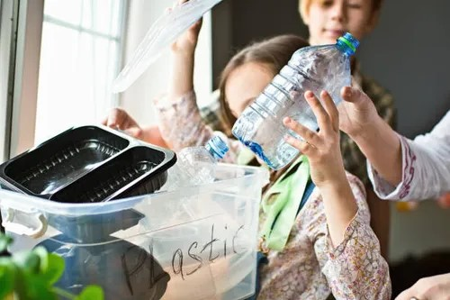

El reciclaje es un proceso que consiste en convertir materiales de desecho en materia prima o en otros productos, de manera de extender su vida útil y combatir la acumulación de desechos en el mundo.Es importante recordar que cada material tiene su propio proceso de reciclaje y que es importante separar los residuos para que puedan ser reciclados de manera efectiva. Hay varios tipos de reciclaje, cada uno con su propio proceso y finalidad. A continuación, se presentan algunos de los tipos de reciclaje más comunes:
El contenedor amarillo es el adecuado para el reciclaje de varios tipos de plásticos. En él debemos colocar botellas y envases de plástico, latas y briks, bolsas de plástico, cartones de leche, latas, aerosoles, etc. Sin embargo, ¡no todos los productos de plástico van en este contenedor! Todo lo que no sea envases (como juguetes, biberones o cubos de plástico) debe depositarse en los puntos limpios. Una botella de plástico tarda muchos años en degradarse. Transformarla en otro objeto y evitar este desperdicio de recursos es tan sencillo como depositarla en este contenedor. Todos los envases que van al contenedor amarillo son transportados a las plantas de selección y de allí a sus respectivos recicladores, donde se separan, trituran, lavan y homogeneizan los distintos materiales.
El contenedor azul es el adecuado para reciclar papel y cartón. Por ejemplo: periódicos, cajas, bolsas de pan, vasos de café, etc. Un error muy común es tirar aquí los briks, que están compuestos de cartón, plástico y aluminio, cuando en realidad deben colocarse en el contenedor amarillo. Para su reciclaje, el papel y el cartón son trasladados a las plantas de recuperación, donde se limpian, clasifican y prensan. Una vez listos, se transportan hasta la fábrica de papel, donde se transforman en nuevas bobinas de papel que se convertirán en cajas, hojas, periódicos, etc.
El contenedor verde es el adecuado para reciclar vidrio, como botellas, frascos y tarros. Es muy importante no confundir el vidrio con el cristal, ya que son dos materiales con composiciones muy diferentes y no se procesan de la misma manera. En este post, te ayudamos a diferenciarlos para que puedas desecharlos correctamente. Para reciclar el vidrio, se separa el material con separadores magnéticos y se clasifica el vidrio según su tipo. Posteriormente, es triturado y convertido en calcín, es decir, en vidrio seleccionado, limpio y triturado.
Los restos de alimentos, las servilletas y el papel de cocina usados tienen su propio contenedor: el contenedor marrón u orgánico. Aunque no está presente en todas las Comunidades Autónomas, este contenedor se creó para el reciclaje orgánico de los alimentos como una subdivisión del contenedor gris. Todos los restos depositados se utilizan como materia orgánica para producir compost, que se usará como fertilizante y fuente de energía. ¿Cómo se lleva a cabo esta transformación? Los restos se llevan a las compostadoras, que se encargan de imitar el proceso de compostaje natural. ¡Después de seis a doce meses, el compost estará listo para ser utilizado!
En el contenedor gris o de restos se tiran todos aquellos residuos que no son reciclables ni pueden utilizarse para hacer compost. Es decir, si no se puede depositar en ninguno de los otros contenedores, debe ir en el gris. Muchos de los objetos depositados en este contenedor podrían repararse o llevarse al punto limpio. Infórmate por si alguno de tus objetos tiene una recogida diferente. Algunos productos comunes que se tiran en este contenedor son pañuelos usados, pañales, arena para mascotas, pelo, polvo, colillas… En "Dudas del reciclaje" puedes encontrar mucha más información para reducir, reutilizar y reciclar. Además, resolvemos tus dudas sobre el reciclaje de algunos objetos que pueden generar confusión. También puedes consultar con el Asistente Inteligente de Reciclaje de Ecoembes, AIRE, un chatbot que proporciona respuestas inmediatas a todas las dudas y consultas del ciudadano en materia de reciclaje.